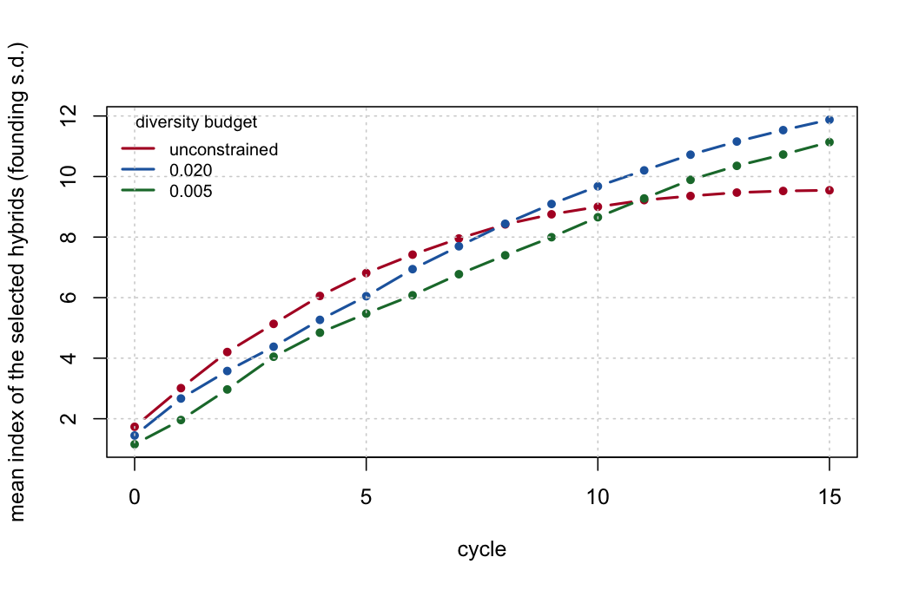
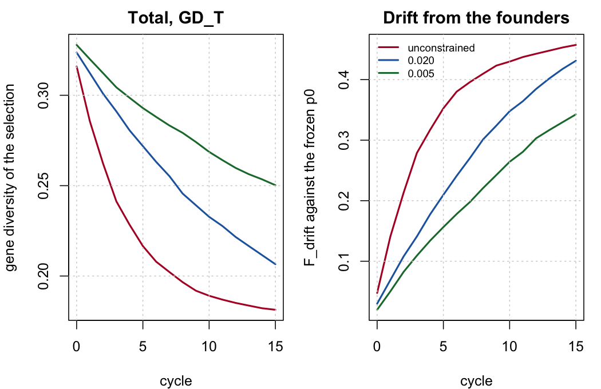

Chapter 25 lists what its numbers cannot tell you. One item on that list is one cycle, not a trajectory: a one-cycle constraint is not a multi-cycle policy. This chapter runs the constrained selection forward, in simulation, to see what the constraint does to a programme over fifteen cycles.
The results of Chapter 15 to Chapter 17 on hybrid selection under the \(\alpha_{\max}\) budget are single rounds. Trajectories have appeared before: the recurrent-selection cycles of Chapter 9 (Step 8), and the inbred-line wheat-type programme of Chapter 22, which overlaps cycles, reports a stock and not a rate, and has no \(\alpha\) budget – its own text calls the application of such a budget to line parents a proposal and sends the reader here. What has not appeared is the diversity constraint on hybrid selection applied cycle after cycle in a discrete-cycle, two-pool model. What diversity buys is what the next cycle can do with it. Section 4.2 states the link between within-pool diversity and genic variance for one generation, and Chapter 4 says that nothing in the preceding chapters predicts the multi-cycle crossover reported here; this chapter measures it.
23.1 The cycle
Selection happens at the hybrid level, on \(A \times B\) crosses. Recycling happens within pool. That asymmetry is the design, and getting it backwards would destroy the heterotic pattern: a doubled haploid (DH) derived from an \(A \times B\) hybrid is a blend of both pools (assumption A3 of Section 10.1, Section 1.1), so a programme that recycled hybrids would merge its pools. How fast the merge would happen is not simulated here.
What crosses the pool boundary is information – which lines proved themselves in hybrid combination – and never germplasm. Figure 23.1 draws the cycle.
Figure 23.1: One cycle of run_cycles() (schematic; no data). Pool A is drawn in blue and pool B in orange, as elsewhere in the book. Solid arrows: every \(A \times B\) hybrid of the two pools is evaluated across the pool boundary, n_sel of them are selected (the diversity budget applies at this step), and the selection yields line-usage weights \(w_A\), \(w_B\). Dashed red arrows: lines are recycled inside their own pool, by intermating within the pool and deriving doubled haploids (DH). The usage weights are the only channel between the two pools, and they are what line_weights() returns.
run_cycles() is the loop. Its data-generating mechanism, as the code of simulate_pools() and run_cycles() implements it (the arguments of book/scripts/regenerate.R cycles, with the defaults of run_cycles() unchanged):
Founders. 25 + 25 inbred lines, \(m = 2000\) biallelic markers, all unlinked (C1). For each marker \(k\) an ancestral frequency \(p^{*}_k \sim U(0.05, 0.95)\) is drawn, and the frequencies of the two pools are independent draws \(p_{Ak}, p_{Bk} \sim \mathrm{Beta}\big(p^{*}_k(1-F_{BN})/F_{BN},\ (1-p^{*}_k)(1-F_{BN})/F_{BN}\big)\) (Equation 6.1: a Balding-Nichols draw (Balding and Nichols 1995) in the parametrisation of that equation, which is this book’s own specification and is the one simulate_pools() implements), clipped to \([10^{-6}, 1 - 10^{-6}]\), with \(F_{BN} = 0.15\) (argument fst; it is the Balding-Nichols parameter, not a realised \(F_{ST}\)). Each line carries allele 1 at each marker with probability \(p_{Ak}\) (pool A) or \(p_{Bk}\) (pool B), independently over lines and markers, so lines are homozygous and coded 0/1, and the 625 hybrids (\(A \times B\), complete factorial) are coded 0, 0.5, 1.
Genetic architecture. 300 of the 2000 markers, chosen at random without replacement, are quantitative trait loci (QTL) with effects \(\beta_k \sim N(0, 1)\) independent of allele frequency; the other 1700 have effect 0 and are neutral for the index but count in every diversity metric. Effects are additive (C9).
The index. The index of a hybrid is its true genetic value \(X\beta\) (no environment, no residual, no estimation error: C7), centred and scaled by the mean and standard deviation of \(X\beta\) over the 625 founding hybrids and held at those constants in every cycle. The unit of every gain below is therefore the standard deviation of the index among the founding hybrids, and cycle 0 has mean 0 over the candidates. The argument h2 of simulate_pools() only builds a noisy index that run_cycles() does not use.
Founder draws. The seed (1 to 5) fixes the founders and \(\beta\) together, so each draw is a different founding population and a different architecture; the three budgets of a seed share both. The recycling stream is set.seed(seed + 1000 + t) before the selector of cycle \(t\).
The assumptions it runs under, stated once:
C1. Loci are unlinked. Every marker segregates independently, so there is no linkage disequilibrium from linkage. Disequilibrium generated by selection is not excluded by this assumption, which therefore does not claim that there is no Bulmer effect (Bulmer 1971): the logged var_g (variance of the index over the 625 candidates) and var_genic (the genic variance of Chapter 4) have a per-run ratio that averages 0.96 at cycle 0 and between 0.63 and 0.78 across the three budgets at cycle 5. A ratio below one means that the covariance term of the genic decomposition is negative. The ratio is not by itself a measure of the Bulmer effect (the divergence of the two pools moves it too); Chapter 24 tests C1 against a random-selection control. Linkage proper is modelled in Chapter 7 and Chapter 8 and, with real meiosis, in Chapter 9.
C2. Recycling is by doubled haploid. Two parents are drawn within pool with probability proportional to usage, and one DH is derived per pair. Because the lines are inbred, (GL[i, ] + GL[j, ]) / 2 lies in \(\{0, 0.5, 1\}\) and a single Bernoulli draw per locus is an exact gamete, not an approximation.
C3. Pool sizes are constant. 25 lines per pool, every cycle. A real programme varies this, and the variation is itself a diversity decision.
C4. Marker effects are fixed. The same \(\boldsymbol{\beta}\) throughout, so the index is comparable across cycles and gain accumulates on the founding cycle’s scale. No new mutation, no changing selection target, no genotype-by-environment.
C5. The base \(p_0\) for \(F_{hom}\) and \(F_{drift}\) is frozen at cycle 0 and carried forward. This is the subject of Section 23.2.
C6. The pool is closed unless a germplasm injection is scheduled.
C7. The index is known without error.Chapter 12 (Finding 5) measures, within one cycle, that error correlated with relatedness costs more gene diversity than independent error at the same nominal accuracy; Chapter 14 fits prediction accuracy per validation scheme and notes that retraining across cycles is not modelled. Nothing here measures how an error in the index would move a trajectory or the crossover below, and the direction of that effect is not known. The gain figures are therefore for a known index; no claim is made that they are an upper bound, for any budget.
C8. Selection is on the hybrid only. No per-se line selection, no stage structure. Chapter 13 is where the multi-stage version lives.
C9. The index is additive: X %*% beta, with no dominance and no specific combining ability. No divergence aligned with dominance can be selected for in this simulation, so it says nothing on that mechanism of Chapter 5.
C10. All 625 hybrids are candidates, in every cycle. The candidate set is the complete \(25 \times 25\) factorial and the index of every hybrid is known; there is no crossing design, tester set or sparse factorial, and none of the questions of Chapter 18 (how few hybrids need be made and evaluated) arises. The between-pool gene diversity (\(GD_{BS}\), column GD_BS) of the 60 selected hybrids below is the between-pool component of their partition at unequal line usage, not the complete-factorial identity of Chapter 3 and Chapter 5.
C11. Cycles are discrete and do not overlap (assumption A4 of Section 10.1). Every rate below is per cycle, not per unit of time, and Section 10.1 says that this is a limit of every rate reported in the book.
C12. The budget is re-referenced to the current pool at every cycle.run_cycles() takes gd_ref, the reference of \(\alpha = (GD_{\text{ref}} - GD_S)/GD_{\text{ref}}\) (Equation 11.15), from the mean \(GD\) of random 60-subsets of the current cycle’s 625 candidates. So \(\alpha_{\max}\) is a per-cycle relative loss against a random subset of an eroding pool, not a loss against the founders; the only frozen base is \(p_0\) of C5. In the mean over the five founder draws, under \(\alpha_{\max} = 0.02\), gd_ref falls from 0.329 at cycle 0 to 0.21 at cycle 15 and the \(GD_T\) of the selection from 0.324 to 0.207 (-36%), while the realised \(\alpha\) is 0.016 and 0.017. The budget \(\alpha_{\max} = 0.02\) is therefore not a 2% total loss over the programme. For \(\alpha_{\max} = 0.005\) the realised \(\alpha\) at cycle 15 is -0.001: the budget no longer binds, and for the unconstrained programme the realised \(\alpha\) falls from 0.039 to 0.003: at cycle 15 even truncation loses little gene diversity against a random subset of the eroded pool.
23.2 Freezing \(p_0\), and what happens if you do not
build_ctx() sets p0 <- colMeans(X) on every call, and has no p0 argument. Run it fresh each cycle and the drift lens is anchored on the population it is supposed to be measuring drift away from. When \(F_{drift}\) is then read on the set the base was built from (all 625 hybrids of the pool), the accumulated drift is reported as none while the pool erodes underneath; read on a selected subset against a base built from the whole pool, it would report the displacement of that subset from the pool and not zero, and still not the drift from the founders.
The demonstration is a neutral arm: the same founders, equal usage for every line, no selection, five founder draws (seeds 1 to 5, the founders of the trajectories below), fifteen generations. At each generation \(F_{drift}\) is read on all 625 hybrids twice, against the frozen founding \(p_0\) and against a base rebuilt from the generation itself:
Show code
ped_n <-expand.grid(a =1:25, b =25+1:25)drift_at <-function(X, base) # F_drift of every row of X against `base`freq_metrics(seq_len(nrow(X)), list(X = X, p0 = base,maf_pop =pmin(base, 1- base)))[["F_drift"]]neutral_arm <-function(s, n_gen =15) { sim <-simulate_pools(n_A =25, n_B =25, m =2000, seed = s) p0 <-colMeans(sim$X) # the founding base, frozen here GL <- sim$GLset.seed(s +6) # seed 7 for founder draw 1 out <-matrix(0, n_gen, 2, dimnames =list(NULL, c("frozen", "reanchored")))for (t inseq_len(n_gen)) { GL <-rbind(next_pool(GL[1:25, ], rep(1, 25), 25),next_pool(GL[26:50, ], rep(1, 25), 25)) X <- (GL[ped_n$a, ] + GL[ped_n$b, ]) /2 out[t, ] <-c(drift_at(X, p0), drift_at(X, colMeans(X))) } out}neu <-lapply(1:5, neutral_arm)# an identity, not a finding: a population is not drifted from itselfstopifnot(all(vapply(neu, function(x) all(x[, "reanchored"] ==0), logical(1))))knitr::kable(data.frame(base =c("frozen $p_0$", "base rebuilt from the 625 hybrids"),F_drift =c(neu[[1]][5, "frozen"], neu[[1]][5, "reanchored"])),digits =4, row.names =FALSE, col.names =c("base of $F_{drift}$", "$F_{drift}$, draw 1, generation 5"))
base of \(F_{drift}\)
\(F_{drift}\), draw 1, generation 5
frozen \(p_0\)
0.0869
base rebuilt from the 625 hybrids
0.0000
The first row is founder draw 1 after five generations of drift without selection, read against the frozen \(p_0\). The second is exactly zero, in all five founder draws and all fifteen generations (the chunk asserts it). That is an identity and not a property of build_ctx(): a base rebuilt from the set being measured makes \(F_{drift}\) zero whatever has happened to the set, here the pool of 625 hybrids and in Section 10.7.1 the selected hybrids. Five generations of real drift would be reported as exactly none.
WarningThis is the commonest way to get a multi-cycle report wrong
Chapter 10 names it the commonest error in plant applications (assumption A6 and Step 1 of its protocol), and Chapter 25 repeats it in the operational checklist. cycle_ctx() in run_cycles() therefore takes p0 once and overwrites both ctx$p0 and ctx$maf_pop on every rebuilt context, and every \(F_{drift}\) number in this chapter depends on it.
23.3 The trajectory
Three budgets, fifteen cycles, five founder draws (seeds 1 to 5) each. \(\alpha_{\max} = \infty\) is the unconstrained programme: it takes the best hybrids it can find and accepts whatever that costs. For a given seed the three arms start from the same founders, so every contrast below is paired by seed. The mean of the five paired differences is given with its standard error (s.e.: the standard deviation of the five differences over \(\sqrt 5\)) and the number of seeds in which the difference is positive. Five founder draws is a small number: the standard errors are themselves imprecise and no test is made. Every comparison in this chapter is exploratory: the cycles tabulated (3, 5, 8, 10, 12, 15), the cycle from which all five seeds are ahead and the contrasts of the horizon table were chosen or read after the trajectories were seen, no multiplicity correction is applied (the horizon table alone has 18 cells), and the standard errors and seed counts are descriptive, not evidence at a stated error rate. Figure 23.2 and Table 23.1 give the trajectory of the mean index. The five cycles_*.csv files and the two figures of this chapter are produced in this repository by book/scripts/regenerate.R cycles; they are not cached from an external study (unlike the headline sweeps of Chapter 18).

Figure 23.2: Mean index of the 60 selected hybrids, in founding-cycle standard deviations, by cycle, for three diversity budgets \(\alpha_{\max}\) (red: unconstrained; blue: 0.02; green: 0.005). Mean over five founder draws, 25 + 25 lines and 2000 markers; dots mark the cycles. No dispersion is drawn (paired contrasts with their standard errors are in Table 23.5). The unconstrained programme has the highest mean through cycle 7 and its curve flattens afterwards; the two constrained curves are still rising at cycle 15.
Table 23.1: Cumulative gain (mean index of the selected hybrids, in founding-cycle standard deviations) by diversity budget \(\alpha_{\max}\), mean over five founder draws.
cycle
\(\alpha_{\max} = 0.005\)
\(\alpha_{\max} = 0.02\)
unconstrained
0
1.16
1.45
1.73
3
4.05
4.38
5.13
5
5.47
6.05
6.81
8
7.40
8.44
8.42
10
8.66
9.68
9.00
12
9.89
10.72
9.36
15
11.14
11.88
9.55
The seed-mean index of the unconstrained programme is the highest through cycle 7 and below that of the \(\alpha_{\max} = 0.02\) programme from cycle 8 on. At cycle 8 the paired difference is +0.02 (s.e. 0.37; positive in 3 of 5 seeds), so the mean crossing is not resolved by five seeds; by cycle 15 it is +2.33 (s.e. 0.32; positive in 5 of 5 seeds), which is 24% more gain, from a programme whose cycle-0 index was 17% below the unconstrained one (paired difference at cycle 0, -0.29 (s.e. 0.06; positive in 0 of 5 seeds)).
Figure 23.3 shows the diversity side. The left panel is \(GD_T\) of the selection (the GD column of the CSV, which equals \(GD_T\) to \(10^{-15}\); it is not within-pool diversity), and the right panel is \(F_{drift}\) of the selected hybrids against the frozen \(p_0\).

Figure 23.3: Left: total gene diversity \(GD_T\) of the 60 selected hybrids (the GD column; within-pool diversity is in Table 23.8). Right: \(F_{drift}\) of the selected hybrids against the frozen founding base \(p_0\). Colours as in Figure 23.2; legend: \(\alpha_{\max}\). Mean over five founder draws, by cycle, 25 + 25 lines and 2000 markers; no dispersion drawn.
What was measured: the genic variance of the candidate pool of each cycle, on the index scale, falls from 1.06 at cycle 0 to 0.001 in the pool of cycle 15 in the unconstrained programme, against 0.08 for \(\alpha_{\max} = 0.02\) and 0.22 for \(\alpha_{\max} = 0.005\) (pool of cycle 15 in each); its \(F_{drift}\) is 0.41 at cycle 8 and 0.457 at cycle 15, and its \(GD_T\) falls from 0.316 to 0.181. The index gained in the last cycle (cycle 14 to 15) is 0.02 unconstrained, against 0.34 for \(\alpha_{\max} = 0.02\) and 0.41 for \(\alpha_{\max} = 0.005\). The last-cycle gain is selected from the pool of cycle 14, so it is paired with the genic variance of that parental pool, which is 0.003 unconstrained, 0.1 for \(\alpha_{\max} = 0.02\) and 0.26 for \(\alpha_{\max} = 0.005\) (not the cycle-15 values above). Parental genic variance and last-cycle gain are ordered identically across the three arms (unconstrained, then \(\alpha_{\max} = 0.02\), then \(\alpha_{\max} = 0.005\), in increasing order of both).
The same association can be read over the whole trajectory. For each run and each cycle \(t = 1, \dots, 15\), the gain is \(\bar u_{S_t} - \bar u_{S_{t-1}}\), with \(\bar u_{S_t}\) the mean index of the 60 hybrids \(S_t\) selected at cycle \(t\), and it is set against var_genic of the pool that cycle \(t-1\) selected from (the pool whose selection produces the pool of cycle \(t\)); there are \(3 \times 5 \times 15 = 225\) such run-cycles. They are not independent: cycles within a run are serially dependent and the three arms of a seed share founders, so the independent unit is the founder draw (5), and the correlations below are given over run-cycles as descriptions and over founder draws as the quantity with a spread.
What was measured. The Spearman correlation of gain with the genic variance of the parental pool is 0.83 over the 225 run-cycles, and within budget 0.98 (unconstrained), 0.82 (\(\alpha_{\max} = 0.02\)) and 0.61 (\(\alpha_{\max} = 0.005\)). Both quantities fall with the cycle number in every arm, so those correlations contain a common time trend; with the mean of each cycle removed from both (cycle as a factor, which leaves only the differences between runs and arms within a cycle) the correlation is 0.46, and 0.4 if the genic variance of the pool of cycle \(t\) itself is used instead of that of cycle \(t-1\). On the seed means, the three arms are ordered by gain as they are by genic variance in 5 of the 14 cycles 2 to 15 (none of cycles 2 to 9, 5 of the 6 cycles 10 to 15). They are not on one curve at every cycle: at cycle 5 the \(\alpha_{\max} = 0.005\) pool has the most genic variance (0.79, against 0.39 unconstrained) and gains less (0.63 against 0.76). At cycle 15 the orderings coincide: parental genic variance 0.003 / 0.1 / 0.26 and gain 0.02 / 0.34 / 0.41 (unconstrained / \(\alpha_{\max} = 0.02\) / \(\alpha_{\max} = 0.005\); genic variance here is that of the parental pool of the last gain, the pool of cycle 14).
The unit with a spread is the founder draw, not the run-cycle. With the cycle means removed within each draw the correlation is positive in all five draws (0.23 to 0.64), and a bootstrap over the five draws (2000 resamples of the draws with replacement, set.seed(1), the cycle-removed correlation recomputed on each resample) gives a 95% percentile interval of 0.35 to 0.59; with five draws that interval is itself imprecise. The association is not spread evenly over the horizon. The cycle-removed correlation is 0.16 within cycles 2 to 6, 0.65 within cycles 7 to 11 and 0.84 within cycles 12 to 15 (three windows that together cover cycles 2 to 15, drawn after the data were seen). Within each arm, with the cycle means removed, it is 0.16 (\(\alpha_{\max} = 0.005\)), 0.35 (\(\alpha_{\max} = 0.02\)) and 0.51 (unconstrained), against 0.61, 0.82 and 0.98 above with the time trend left in.
Inference, and what limits it. Within this simulation the per-cycle gain is associated with the genic variance of the pool it was selected from, with a within-cycle Spearman correlation of 0.46, positive in every founder draw and concentrated late in the horizon (weak in cycles 2 to 6, where the arm ordering of gain and of genic variance never coincides); the sign is the one expected from Section 4.2 and fits the flattening of the unconstrained curve (“out of material” is that reading). The \(\alpha_{\max} = 0.02\) parental pool of the last gain (cycle 14) has lost most of its genic variance (0.1 against 1.06 at cycle 0) and its last-cycle gain still exceeds the unconstrained one, but its genic variance is 34 times that of the unconstrained parental pool of cycle 14: that is the same ordering, not an exception to it. The departure at cycle 5 is compatible with a binding budget limiting how far selection can go in a pool of a given variance, which was not tested. This is an association, not a test of a mechanism: the within-cycle correlation is 0.46 over run-cycles, with the spread over the five founder draws given above. Genic variance is logged and gain is correlated with it, but no arm manipulates genic variance with the others held fixed: the budget changes the pool’s diversity, its drift and the usage of lines at once, genic variance is not the variance selection sees (the ratio of var_g to var_genic in C1), the gain of a run-cycle also contains the selection differential of cycle \(t\), and the correlations that do not remove the cycle carry a common time trend. A causal test would need an intervention (for instance resetting the genic variance of a pool at a fixed cycle), which was not run. Wientjes et al. (2022) report, in 50-generation simulations of a livestock-type population, that genomic and pedigree selection lose more genetic variance and more segregating loci than phenotypic selection (abstract). That is a related process in a different system, not a demonstration of the mechanism here.
23.3.1 What differential evolution does on the same context, and what it cannot show
The trajectories above use the greedy sweep of sel_greedy_budget(), which is what makes fifteen cycles by five seeds by three budgets affordable. The selector argument of run_cycles() lets any selector drive the loop, and the chunk below puts differential evolution (DE, sel_de(), NP = 300, itermax = 1000, a nominal \(3 \times 10^{5}\) evaluations per cycle) on the trajectory of seed 1 (Table 23.2). At each cycle the greedy sweep and truncation are evaluated on the same context as the DE plan, so that the comparison is plan against plan and not trajectory against trajectory. Chapter 17 states that its statements about the DE are statements about the budgets it runs, 30,000 evaluations in its benchmark, and not properties of the method; the budget here is ten times the benchmark’s. The chunk takes several minutes to run.
Show code
de_cmp <-local({ seen <-list() sel <-function(ctx, n_sel, alpha_max, gd_ref, max_use) { d <-suppressWarnings(sel_de(ctx, n_sel, alpha_max, gd_ref, NP =300,itermax =1000, max_use = max_use)) g <-sel_greedy_budget(ctx, n_sel, alpha_max, gd_ref, max_use) tr <-sel_truncation(ctx, n_sel) al <-function(s) (gd_ref -gene_diversity(s, ctx)) / gd_ref seen[[length(seen) +1L]] <<-data.frame(de =mean(ctx$index[d]), greedy =mean(ctx$index[g]),trunc =mean(ctx$index[tr]), alpha_de =al(d), alpha_greedy =al(g)) d # the DE plan drives the trajectory }do.call(rbind, lapply(c(Inf, 0.02), function(am) { seen <<-list() r <-run_cycles(n_cycles =12, alpha_max = am, n_sel =60, B_null =200,seed =1, selector = sel) x <-do.call(rbind, seen) x$cycle <-0:12 x$budget <-if (is.finite(am)) "0.020"else"unconstrained" x$traj <- r[["index"]] x }))})# the DE arm of the cached file is this armfor (b inc("unconstrained", "0.020")) { cd <- selc[selc$selector =="de"& selc$budget == b, ]stopifnot(isTRUE(all.equal(de_cmp$traj[de_cmp$budget == b], cd$index[order(cd$cycle)])))}tol <-1e-8u <- de_cmp[de_cmp$budget =="unconstrained", ]a2 <- de_cmp[de_cmp$budget =="0.020", ]d2 <- a2$de - a2$greedyn_up <-sum(d2 > tol); n_dn <-sum(d2 <-tol); n_eq <-sum(abs(d2) <= tol)
Table 23.2: Seed 1, \(\alpha_{\max} = 0.02\), cycles 0 to 12: index of the DE plan, of the greedy-sweep plan and of truncation (founding-cycle standard deviations), each evaluated on the context the DE trajectory reaches at that cycle; the difference DE minus greedy; and the realised \(\alpha\) of the DE and the greedy plans (dimensionless).
cycle
DE
greedy
truncation
DE minus greedy
\(\alpha\) DE
\(\alpha\) greedy
0
1.389
1.375
1.532
0.014
0.020
0.018
1
2.610
2.582
2.961
0.028
0.020
0.013
2
3.597
3.536
4.253
0.062
0.020
0.007
3
4.577
4.659
5.021
-0.082
0.020
0.015
4
5.528
5.579
5.919
-0.051
0.020
0.015
5
6.352
6.319
6.456
0.033
0.020
0.013
6
7.113
7.162
7.210
-0.049
0.018
0.020
7
7.890
7.938
7.970
-0.048
0.020
0.020
8
8.443
8.471
8.527
-0.028
0.019
0.019
9
8.986
9.001
9.105
-0.015
0.019
0.018
10
9.535
9.579
9.693
-0.044
0.020
0.018
11
10.015
10.037
10.147
-0.022
0.020
0.019
12
10.467
10.467
10.467
0.000
0.017
0.017
Result. With no budget, the DE plan, the greedy plan and truncation have the same index in 13 of 13 cycles (largest difference 0). At \(\alpha_{\max} = 0.02\) the DE plan has a higher index than the greedy plan in 4 of 13 cycles, a lower one in 8 and the same in 1; the differences run from -0.082 to 0.062 index units. Inference, and what limits it: truncation is the exact optimum without a budget, so no selector can improve on it there; under the budget this run gives no evidence that DE finds better per-cycle plans than the greedy sweep, at this evaluation budget, on this one seed. It says nothing about the DE at other budgets of evaluations or on other seeds.
Two trajectories of one seed cannot be compared for a selector effect. The unconstrained DE arm and the unconstrained greedy arm select the same plan in each cycle (truncation) yet differ in index at cycle 12 by 1.86 (at cycle 1, by 0.6). The only difference between the arms is the random stream: run_cycles() seeds the stream once per cycle before the selector, the DE draws from it and truncation does not, so the recycling draws that follow differ. The next chunk measures the size of that effect directly: the same unconstrained rule, truncation, with one uniform draw added to the selector so that the stream shifts, on the five founder draws of the trajectories.
Show code
stream <-sapply(1:5, function(s)run_cycles(n_cycles =15, alpha_max =Inf, n_sel =60, B_null =200, seed = s,selector =function(ctx, n_sel, alpha_max, gd_ref, max_use) {runif(1) # shifts the stream, selects nothingsel_truncation(ctx, n_sel) })[["index"]])plain <-sapply(1:5, function(s) { d <- traj[traj$budget =="unconstrained"& traj$seed == s, ] d$index[order(d$cycle)]})stopifnot(isTRUE(all.equal(stream[1, ], plain[1, ]))) # cycle 0 does not use the streamshift <- stream - plain # rows: cycles 0 to 15
Result. With the same rule and one extra uniform draw per cycle, the index at cycle 12 moves by 0.77 on average over the five founder draws (largest 1.89) and at cycle 15 by 1.02 (largest 2.26); at cycle 1 by 0.2. For comparison, the standard error of the paired contrast of \(\alpha_{\max} = 0.02\) against the unconstrained programme over five seeds is 0.34 at cycle 12. Inference, and what limits it: a trajectory contrast between two arms of one seed that differ in the random stream is of the size of the effects discussed here, so the one-seed DE and greedy trajectories say nothing about the crossover under DE, and Table 23.2 is the only DE result of this chapter. A paired design in which the selector arms share the recycling stream would settle the trajectory question; it needs the stream to be reset after the selector in run_cycles(), which was not changed for this chapter, so it was not run. A mechanism in which a better per-cycle optimiser spends budget that a later cycle needs is a hypothesis; nothing here tests it.
23.4 The rate of inbreeding, and what \(N_s\) is not
Chapter 25’s checklist says to regress \(\log(1 - F)\) on cycle and check that it is linear, because curvature means a non-constant rate. Section 10.7.4 gives the call: \(\Delta F = 1 - e^{\text{slope}}\) on cycles \(1..t\), because \(1 - F_t = (1 - \Delta F)^t (1 - F_0)\) makes the slope \(\log(1 - \Delta F)\), and reads \(R^2\) as the check. Cycle 0 is dropped: the \(F_{drift}\) of the selected hybrids at cycle 0 is the displacement of the selection from the base before any recycling, not a generation of drift. \(F_{drift}\) is that of the selected hybrids on merged hybrid frequencies, which is a different level from the drift of one pool in Equation 1.4 (Section 1.2.4 says the two are not read against each other). The fit is applied to the seed-mean series, with the neutral arm of Section 23.2 (equal usage, no selection, all 625 hybrids, the same five founder draws) as the reference on the same estimator (Table 23.3):
Show code
fit_rate <-function(Fv) { # Fv: seed-mean F_drift at cycles 1 to 15 k <-seq_along(Fv); f <-lm(log(1- Fv) ~ k)c(dF =1-exp(coef(f)[["k"]]), R2 =summary(f)$r.squared, F15 = Fv[length(Fv)])}Fb <-function(b) { d <- ag[ag$budget == b & ag$cycle >=1, ]; d$F_drift[order(d$cycle)] }F_neu <-Reduce(`+`, lapply(neu, function(x) x[, "frozen"])) /length(neu)rate <-rbind(neutral =fit_rate(F_neu),t(sapply(c(unconstrained ="unconstrained", `alpha_max 0.02`="0.020",`alpha_max 0.005`="0.005"), function(b)fit_rate(Fb(b)))))rate <-data.frame(arm =rownames(rate), rate, ratio_to_neutral = rate[, "dF"] / rate["neutral", "dF"],row.names =NULL)rate_show <- rate # display copy: `rate$arm` keeps the keys the prose below readsrate_show$arm <-c("neutral (no selection)", "unconstrained","$\\alpha_{\\max} = 0.02$", "$\\alpha_{\\max} = 0.005$")knitr::kable(rate_show, digits =c(0, 4, 3, 3, 2), row.names =FALSE,col.names =c("arm", "$\\Delta F$ per cycle", "$R^2$", "$F_{drift}$ at cycle 15", "$\\Delta F$ / neutral $\\Delta F$"))
Table 23.3: Fitted rate \(\Delta F = 1 - e^{\text{slope}}\) of \(\log(1 - F_{drift})\) on cycles 1 to 15 (per cycle), seed-mean series over five founder draws, with the \(R^2\) of the fit, \(F_{drift}\) at cycle 15 and the ratio of the fitted rate to that of the neutral arm.
arm
\(\Delta F\) per cycle
\(R^2\)
\(F_{drift}\) at cycle 15
\(\Delta F\) / neutral \(\Delta F\)
neutral (no selection)
0.0152
0.997
0.209
1.00
unconstrained
0.0288
0.853
0.457
1.89
\(\alpha_{\max} = 0.02\)
0.0351
0.993
0.431
2.31
\(\alpha_{\max} = 0.005\)
0.0261
0.998
0.343
1.72
Result. The fitted \(\Delta F\) per cycle is 0.0351 for \(\alpha_{\max} = 0.02\), 0.0288 for the unconstrained programme and 0.0261 for \(\alpha_{\max} = 0.005\), with \(R^2\) of 0.993, 0.853 and 0.998; the neutral arm gives 0.0152 (\(R^2 =\) 0.997). The unconstrained programme has the largest \(F_{drift}\) at cycle 15 (0.457, against 0.431 and 0.343) and the middle fitted rate, so the two orderings differ. The managed rates are 1.7 to 2.3 times the neutral one.
Inference, and what limits it. The unconstrained series is the one whose \(\log(1 - F)\) is least linear (\(R^2\) in Table 23.3): \(F_{drift}\) is decelerating, and the slope of a regression through a decelerating series is an average over the curve, which is consistent with the programme of highest \(F_{drift}\) having only the middle fitted rate. Section 10.7.4 reads \(R^2 < 0.995\) on an averaged series as a non-constant rate, at its scale only. By that threshold the \(\alpha_{\max} = 0.02\) series is under it too, and the neutral arm here is under the \(0.999\) that Section 10.7.4 found for its own neutral fits, so the threshold does not separate the arms in this chapter; the reading rests on the unconstrained \(R^2\) being far below the others. The ratio to the neutral arm mixes two things: selection’s effect on which lines are used, and the displacement of 60 selected hybrids from their pool, which a random 60 would also show and which the neutral arm (all 625 hybrids) does not. Neither is separated here, and the neutral arm is one set of five founder draws. A rate-based \(N_e = 1/(2\Delta F)\) is therefore not reported for the managed arms: Chapter 12 says not to report one under active management, and a \(\Delta F\) read off a managed trajectory with a saturating series is a fitted slope, not a realised effective size.
Warning\(N_s\) does not project this
Section 11.3 shows that on molecular coancestry \(\theta_S \in [1/2, 1]\) and so \(N_s = 1/(2\theta_S) \in [1/2, 1]\) for every set: \(N_s\) is a monotone rescaling of \(\theta_S\), not a number of individuals. Here \(N_s\) of the selected hybrids ranges over 0.61 to 0.75 (mean 0.67) across all runs and cycles. A number in that range cannot be set beside an effective size in individuals or a rate, and no discrepancy between them is quantified. Report \(N_s\) as a descriptor of a plan, and read \(\Delta F\) from the trajectory.
23.5 Choosing a budget for a horizon
Every seed crosses over for both budgets, and the cycle at which it happens varies across seeds (Table 23.4):
Table 23.4: Cycle at which each budget \(\alpha_{\max}\) first overtakes the unconstrained programme in mean index, per founder draw (seed).
seed
\(\alpha_{\max} = 0.02\)
\(\alpha_{\max} = 0.005\)
1
8
11
2
12
15
3
10
12
4
7
10
5
5
9
The crossover cycle of \(\alpha_{\max} = 0.02\) is 5 to 12 across the five seeds (mean 8.4), that of \(\alpha_{\max} = 0.005\) is 9 to 15 (mean 11.4), and the tighter budget crosses later in 5 of 5 seeds. “About eight cycles” is the mean of the \(\alpha_{\max} = 0.02\) crossovers only. Crossing later is not ending higher: against the looser budget, at cycle 15, the paired difference of index (\(\alpha_{\max} = 0.005\) minus \(\alpha_{\max} = 0.02\)) is -0.74 (s.e. 0.16; positive in 0 of 5 seeds), and the \(\alpha_{\max} = 0.005\) mean is below the \(\alpha_{\max} = 0.02\) mean at every cycle from 0 to 15. The tighter budget ends higher only than the unconstrained programme (+1.59 (s.e. 0.42; positive in 5 of 5 seeds)), and that contrast is the one every budget below \(\infty\) shares. The choice of \(\alpha_{\max}\) is a function of the planning horizon, and the paired contrasts at selected cycles are in Table 23.5:
Table 23.5: Paired difference in cumulative index (founding-cycle standard deviations) at cycle \(k\) between two budgets: mean over five founder draws, then (s.e.; seeds out of five in which the first budget is ahead).
cycle
0.02 minus unconstrained
0.005 minus unconstrained
0.005 minus 0.02
3
-0.75 (0.19; 0/5)
-1.09 (0.10; 0/5)
-0.33 (0.12; 1/5)
5
-0.76 (0.25; 1/5)
-1.34 (0.33; 0/5)
-0.57 (0.17; 0/5)
8
+0.02 (0.37; 3/5)
-1.02 (0.45; 0/5)
-1.04 (0.13; 0/5)
10
+0.68 (0.35; 4/5)
-0.35 (0.50; 2/5)
-1.02 (0.23; 0/5)
12
+1.36 (0.34; 5/5)
+0.53 (0.47; 4/5)
-0.83 (0.20; 0/5)
15
+2.33 (0.32; 5/5)
+1.59 (0.42; 5/5)
-0.74 (0.16; 0/5)
Read within the 15 cycles run and on five founder draws, not as a rule beyond them, and as exploratory: the cycles tabulated and the cycle from which all five seeds are ahead were chosen or read after the data, with no multiplicity rule (Section 23.3). On the seed mean, the unconstrained programme is the best of the three through cycle 7; \(\alpha_{\max} = 0.02\) is the best from cycle 8 to cycle 15; \(\alpha_{\max} = 0.005\) is the best at no cycle. The number of seeds, out of 5, in which \(\alpha_{\max} = 0.02\) is ahead of the unconstrained programme is 0, 1, 3, 4, 5, 5 at cycles 3, 5, 8, 10, 12, 15, and all five are ahead from cycle 12 on; \(\alpha_{\max} = 0.005\) is ahead in 2 of 5 at cycle 10, and its seed mean crosses at cycle 11. So, in this population and selection intensity, and at the cycles tabulated: for horizons where no seed is ahead the constraint is a cost in all five seeds; where the count is neither 0 nor 5 the sign of the \(\alpha_{\max} = 0.02\) contrast is not resolved by five seeds; from cycle 12 on it is ahead in all five. For \(\alpha_{\max} = 0.005\) the data give no horizon within 15 cycles at which it is the better choice. The gap \(\alpha_{\max} = 0.005\) minus \(\alpha_{\max} = 0.02\) is -1.02 at cycle 10 and -0.74 at cycle 15; whether it closes beyond cycle 15 is not measured, and no extrapolation is made. Of the three, \(\alpha_{\max} = 0.02\) is the only one with a measured advantage within 15 cycles, and no budget is recommended for any horizon outside the cycles tabulated.
The caveat matters more than the numbers. n_sel = 60 out of 625 candidates from 25 + 25 lines is a small, intensely selected programme, and only that selection intensity was run. Whether the crossover arrives sooner under harder selection, or depends on the pool size or the number of markers, is not measured here and is a hypothesis. Gorjanc et al. (2018) find that the best diversity penalty depends on the number of candidates per cycle (full text), which makes the dependence plausible and does not measure it for this model. What was observed, for this population, is the shape: an unconstrained programme leads early, flattens, and is passed; whether the shape transfers to another scale is not tested.
23.6 The per-line cap, at last measurable
Chapter 16 carries max_use through every selector, defaulting to NULL everywhere. Within a single cycle a cap shrinks the feasible set and so cannot raise the optimum of the index; across cycles it may buy something, and this is where that can be looked at. Chapter 10 (Step 6) prices a cap of 4 on truncation with no budget and defers the answer to this chapter; the chapter does not run that arm. It runs the same budget (\(\alpha_{\max} = 0.02\)), the same seeds and two caps, 6 and 3 (Table 23.6):
Table 23.6: The per-line usage cap \(k_{\max}\) (max_use) across fifteen cycles, \(\alpha_{\max} = 0.02\), mean over five founder draws, at cycles 0, 5, 10 and 15 (none: no cap). \(\max_a k_a\) (max_line) is the largest number of times one line enters the 60 selected hybrids.
\(k_{\max}\)
cycle
index (founding s.d.)
\(GD_T\)
\(F_{drift}\)
\(\max_a k_a\)
3
0
0.491
0.329
0.005
3.0
6
0
1.305
0.323
0.025
6.0
none
0
1.446
0.324
0.030
12.4
3
5
2.423
0.296
0.104
3.0
6
5
5.788
0.270
0.194
6.0
none
5
6.047
0.272
0.210
15.4
3
10
4.058
0.268
0.185
3.0
6
10
9.216
0.233
0.316
6.0
none
10
9.677
0.233
0.348
15.4
3
15
5.532
0.247
0.250
3.0
6
15
11.268
0.210
0.395
6.0
none
15
11.877
0.207
0.431
16.4
At cycle 15, max_use = 6 against no cap differs by -0.61 (s.e. 0.28; positive in 1 of 5 seeds) in index (capped minus uncapped), which is 5% of the uncapped gain, and by -0.037 (s.e. 0.010; positive in 0 of 5 seeds) in \(F_{drift}\) (0.395 against 0.431); the uncapped programme leans on one line 16 times in its final cycle. max_use = 3 differs by -6.35 (s.e. 0.35; positive in 0 of 5 seeds) in index, which leaves 47% of the uncapped gain, and by -0.182 (s.e. 0.008; positive in 0 of 5 seeds) in \(F_{drift}\). In this horizon neither cap is repaid in index: the cost is not recovered by cycle 15, which answers the question that Chapter 10 left to this chapter for these two caps and this budget. Whether it is repaid beyond cycle 15 is not measured, and the cost of max_use = 6 is 2.2 standard errors of its paired difference.
Note which lens the cap moves. Gene diversity \(GD_T\) at cycle 15 differs by +0.003 (s.e. 0.002; positive in 3 of 5 seeds) with the cap of 6, and \(GD_T\) is the lens \(\alpha_{\max}\) pins. The difference shows up in \(F_{drift}\), which is the lens Chapter 10 established the constraint does not pin. Inference: the cap is a handle on the lens the budget leaves free, which is a reason to have it in addition to the budget and not instead of it, at the price in index above.
This changes no default. max_use remains NULL throughout the package.
23.7 Injection, and what it costs
No closed budget holds indefinitely: all three trajectories are still losing diversity at cycle 15, only at different rates. Chapter 21 and Chapter 25 both prescribe periodic germplasm injection.
The experiment is a particular kind of injection. At cycle 8, six of the twenty-five lines in each pool are replaced by lines drawn from the founding generation of the same programme (inject = list(cycle = 8, n = 6)). These are whole founder lines of known merit on the index scale of cycle 0, with no conversion and no donor from outside the programme. It is not what Chapter 8 simulates, which is the transfer of up to four loci into one elite line by backcrossing and ends in a near-copy of the recurrent parent; whether such a line then enters a pool is a decision that chapter leaves outside it.
Table 23.7: One injection event at cycle 8 (six founder lines per pool), against the same programme left closed: mean index (founding-cycle standard deviations), \(GD_T\), \(F_{drift}\) and realised \(\alpha\) at cycles 7, 8, 10, 12 and 15; \(\alpha_{\max} = 0.02\), mean over five founder draws.
programme
cycle
index (founding s.d.)
\(GD_T\)
\(F_{drift}\)
\(\alpha\)
closed
7
7.697
0.255
0.270
0.015
injected at cycle 8
7
7.697
0.255
0.270
0.015
closed
8
8.440
0.246
0.301
0.016
injected at cycle 8
8
6.469
0.283
0.182
0.004
closed
10
9.677
0.233
0.348
0.016
injected at cycle 8
10
7.865
0.270
0.233
0.009
closed
12
10.722
0.222
0.385
0.016
injected at cycle 8
12
9.391
0.254
0.291
0.011
closed
15
11.877
0.207
0.431
0.017
injected at cycle 8
15
11.283
0.234
0.364
0.017
The cost is immediate and the return is slow (Table 23.7). Gene diversity \(GD_T\) jumps from 0.246 to 0.283 and \(F_{drift}\) falls by 40%, but the index drops by +1.97 (s.e. 0.13; positive in 5 of 5 seeds) on the spot (closed minus injected) and has not repaid by cycle 15: closed minus injected is then +0.59 (s.e. 0.12; positive in 5 of 5 seeds) (11.28 against 11.88).
The budget is slack in the injection cycle. The realised \(\alpha\) at cycle 8 is 0.0035 in the injected arm against 0.0158 in the closed one (budget 0.02), so the budget is not what limits the selection in that cycle: the pool is more diverse and the reference of C12 moves with it. Inference: the index drop then reflects the merit of the injected founder lines against the evolved pool, not the price of meeting the budget; the simulation does not separate the two.
What was measured, in short: within 15 cycles the injection arm has higher \(GD_T\) and lower \(F_{drift}\) than the closed arm and a lower index (Table 23.7), in this one event (6 lines per pool at cycle 8) and on five founder draws. Inference, and what limits it: injection of the programme’s own founders restores diversity without returning more gain within this horizon, and one may read it as a trade of the same kind as the diversity budget, with a later return and a larger initial cost. That comparison is an interpretation; the injection arm shares no parameter with the budget arm, “diversity” here is only \(GD_T\) and \(F_{drift}\), and the cost of the budget was not measured on the injection’s scale. The run that would repay the injection is longer than fifteen cycles, if it exists; this chapter does not measure it. What unadapted material from a genebank would cost is not simulated: Chapter 21 reads Sanchez et al. (2023) on bridging populations, in simulation only.
23.8 What the corpus supports
Appendix D’s screened corpora hold 687 plant and 324 animal records. They carry no field for recurrent selection or long-term gain: the theme field of the 89 directly relevant animal records takes 7 values (OCS / contribution optimisation; Coancestry / relationship matrix choice; Allelic richness / rare alleles; Optimisation algorithms / cost; Effective size; Heterozygosity / gene diversity; Core collection / subset selection; Table D.5), none of them recurrent selection or long-term gain, and the plant file has no theme field. The corpora therefore do not allow a count of how much of them concerns this chapter’s topic. The six records cited below are in them (4 in the animal file, 2 in the plant file) and were chosen by reading titles and relevance notes. The reading level of each statement is given: full text for Gorjanc et al. (2018) and Allier et al. (2019), abstract only for the other four.
Allier et al. (2019) (full text) report, in a simulation of optimal cross selection, that selection under a diversity target gave lower short-term and significantly higher long-term genetic gain than unconstrained cross selection. That is the same sign as the crossover found here; their model, selection unit and horizon differ, and no crossing cycle for a budgeted against an unconstrained trajectory is taken from them. Gorjanc et al. (2018) (full text) compare truncation with diversity-penalised optimal cross selection in two-part programmes with rapid recurrent genomic selection, in a 20-year wheat simulation: more cycles per year raised gain in the early years and lowered long-term gain, and optimal cross selection gave more gain than truncation. That is a trade between gain and diversity of the same kind as the constrained against unconstrained contrast here; it is not a result about a better per-cycle optimiser, which this chapter’s DE check does not support. Müller et al. (2018) (abstract) report that selecting on expected maximum haploid breeding values, a criterion chosen for its effect on later cycles and with no diversity budget, outperformed selection on genomic estimated breeding values (GEBVs) after about five cycles and kept more diversity: a crossing cycle, for a different pair of criteria. Wientjes et al. (2022) is read above (abstract). Doublet et al. (2019) (abstract) report, for three French dairy breeds, annual gains raised by 50, 71 and 33% (Montbeliarde, Normande, Holstein) by genomic selection and a significant rise in inbreeding in Holstein only, with no significant change in Montbeliarde and Normande: a before-and-after comparison in operating programmes, and a diversity cost in one breed of three. Rutkoski (2019) (abstract) is itself a simulation, of 80 rice programmes over 28 years, in which five estimators of realised gain are compared with the simulated truth: the best estimators erred by 15% over all 28 years and 27% over the last 15, and the best correlation with true gain was 0.59. The gain in this chapter is the true index of the selected hybrids (C7); in a programme it must be estimated, and in that simulation the estimates were imprecise.
What Chapter 21 lists as not established in the retrieved set, in its row for proportional diversity loss against a same-size resampling baseline in an operating maize programme (Table 21.3), remains so for that set. This chapter demonstrates a crossover in simulation, under C1 to C12, which is not the same as establishing it in an operating programme, and nothing is claimed about publications outside the retrieved corpora.
23.9 Where this connects
Chapter 5 derives, for inbred parents, the complete factorial and flat dominance, that the divergence term of expected heterosis is \(GD_{BS}\), and a \(d\)-weighted version where dominance varies across loci. This chapter’s index is additive (C9), so it cannot test whether selection builds divergence aligned with dominance. What it logs is \(GD_{BS}\) of the 60 selected hybrids (C10) and the within-pool diversity \(GD_{WS} = GD_T - GD_{BS}\) (the chunk at the start of the assumptions asserts that it equals \(1 - (\theta_A + \theta_B)/2\) to \(10^{-12}\)), which neither the left panel of Figure 23.3 nor the GD column shows (Table 23.8):
Table 23.8: Partition of the gene diversity of the 60 selected hybrids at cycles 0 and 15, \(GD_T = GD_{WS} + GD_{BS}\), by diversity budget \(\alpha_{\max}\) (unconstrained, 0.02, 0.005); mean over five founder draws.
budget \(\alpha_{\max}\)
cycle
\(GD_T\)
\(GD_{WS}\) (within pools)
\(GD_{BS}\) (between pools)
unconstrained
0
0.316
0.268
0.048
unconstrained
15
0.181
0.006
0.175
\(\alpha_{\max} = 0.02\)
0
0.324
0.281
0.043
\(\alpha_{\max} = 0.02\)
15
0.207
0.040
0.166
\(\alpha_{\max} = 0.005\)
0
0.328
0.288
0.040
\(\alpha_{\max} = 0.005\)
15
0.250
0.102
0.148
Result. \(GD_{BS}\) at cycle 15 is above its cycle-0 value in 15 of 15 runs (three budgets by five seeds) and is non-decreasing over the 15 cycles in 14; \(GD_{WS}\) at cycle 15 is below its cycle-0 value in 15. Seed-averaged, \(GD_{WS}\) falls from 0.268 to 0.006 unconstrained, from 0.281 to 0.04 under \(\alpha_{\max} = 0.02\) and from 0.288 to 0.102 under \(\alpha_{\max} = 0.005\), while \(GD_{BS}\) rises in all three. Interpretation, and what limits it: under drift and selection on an additive index acting together, the two pools separate while each loses its own diversity, and the budgets that keep more \(GD_T\) keep more of the within-pool part. Chapter 3 shows that drift alone in two closed pools of equal weight raises \(GD_{BS}\) in expectation, and this chapter has no arm that separates drift from selection for \(GD_{BS}\), so the rise is not attributed to selection, and with an additive index it is not evidence about heterosis. The within/between trade is the one Chapter 11’s partition was built to expose.
Chapter 25 is a single cycle in operational detail, with another simulator and another selection size (stage1_simulate() and 10% of the candidates, against simulate_pools(), 300 QTL and 60 of 625 here), so it is a pointer to this chapter and not its cycle 0. Its checklist for “Across cycles” lists: the per-stage loss ledger, the linearity of \(\log(1 - F)\), periodic germplasm injection, and the diversity cost per cycle when cycle time is shortened. This chapter bears on two of them, the linearity of \(\log(1 - F)\) (\(R^2\) in Table 23.3) and injection (one injection arm). It has no stage structure (C8), so it says nothing about the ledger, and its rate is per cycle in a discrete-cycle model (C11), so it says nothing about the fourth item. Freezing \(p_0\), which is in the “Setting up” list of that chapter and not in its “Across cycles” list, is shown in Section 23.2.
Reproduce this chapter
All the code of this chapter, in order and with the explanation kept as comments, is one script: 11b-diversity-across-cycles.R. Download it, install hybdiv, and run it top to bottom in an empty directory; cached results are fetched on first use.
Allier, A., C. Lehermeier, A. Charcosset, L. Moreau, and S. Teyssèdre. 2019. “Improving Short- and Long-Term Genetic Gain by Accounting for Within-Family Variance in Optimal Cross-Selection.”Frontiers in Genetics 10 (1006). https://doi.org/10.3389/fgene.2019.01006.
Balding, David J., and Richard A. Nichols. 1995. “A Method for Quantifying Differentiation Between Populations at Multi-Allelic Loci and Its Implications for Investigating Identity and Paternity.”Genetica 96 (1-2): 3–12. https://doi.org/10.1007/BF01441146.
Bulmer, Michael G. 1971. “The Effect of Selection on Genetic Variability.”The American Naturalist 105 (943): 201–11. https://doi.org/10.1086/282718.
Doublet, A.-C., P. Croiseau, S. Fritz, et al. 2019. “The Impact of Genomic Selection on Genetic Diversity and Genetic Gain in Three French Dairy Cattle Breeds.”Genetics Selection Evolution 51 (52). https://doi.org/10.1186/s12711-019-0495-1.
Gorjanc, G., R. C. Gaynor, and J. M. Hickey. 2018. “Optimal Cross Selection for Long-Term Genetic Gain in Two-Part Programs with Rapid Recurrent Genomic Selection.”Theoretical and Applied Genetics 131: 1953–66. https://doi.org/10.1007/s00122-018-3125-3.
Müller, D., P. Schopp, and A. E. Melchinger. 2018. “Selection on Expected Maximum Haploid Breeding Values Can Increase Genetic Gain in Recurrent Genomic Selection.”G3: Genes, Genomes, Genetics 8 (4): 1173–81. https://doi.org/10.1534/g3.118.200091.
Rutkoski, J. E. 2019. “Estimation of Realized Rates of Genetic Gain and Indicators for Breeding Program Assessment.”Crop Science 59 (3): 981–93. https://doi.org/10.2135/cropsci2018.09.0537.
Sanchez, Dimitri, Sarah Ben Sadoun, Tristan Mary-Huard, Antoine Allier, Laurence Moreau, and Alain Charcosset. 2023. “Improving the use of plant genetic resources to sustain breeding programs’ efficiency.”Proceedings of the National Academy of Sciences 120 (14): e2205780119. https://doi.org/10.1073/pnas.2205780119.
Wientjes, Y. C. J., P. Bijma, M. P. L. Calus, B. J. Zwaan, Z. G. Vitezica, and J. van den Heuvel. 2022. “The Long-Term Effects of Genomic Selection: 1. Response to Selection, Additive Genetic Variance, and Genetic Architecture.”Genetics Selection Evolution 54 (19). https://doi.org/10.1186/s12711-022-00709-7.